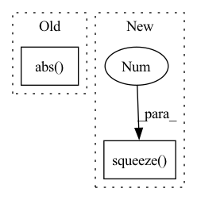

Pattern ID :19769
Before Change
// feat_erb = torch.view_as_complex(spec).abs().matmul(self.erb_fb)
// ic(self.erb_comp.c, self.erb_comp.mn)
// ic(self.cplx_comp.c)
feat_erb = torch.view_as_complex(spec).abs() .matmul(self.erb_fb)
feat_erb = self.erb_comp(feat_erb)
// feat_spec = self.cplx_comp(spec.squeeze(1)[:, :, : self.df_bins].permute(0, 3, 1, 2))
// e0, e1, e2, e3, emb, c0, lsnr = self.enc(feat_erb, feat_spec)After Change
feat_spec: Tensor, // Not used, take spec modified by mask instead
) -> Tuple[Tensor, Tensor, Tensor, Tensor]:
// ic(feat_erb.shape)
feat_spec = feat_spec.squeeze(1 ) .permute(0, 3, 1, 2)
// ic(self.erb_comp.c, self.erb_comp.mn)
// feat_erb = torch.view_as_complex(spec).abs().matmul(self.erb_fb)In pattern: SUPERPATTERN
Frequency: 3
Non-data size: 2
Instances Fragment ID: 64478013
Project Name: rikorose/deepfilternet
Commit Name: 5dd7650c4ec141968affd0d3594c8e41a2c89b1c
Time: 2022-04-12
Author: h.schroeter@pm.me
File Name: DeepFilterNet/df/deepfilternet2.py
M Class Name: DfNet
N Class Name: DfNet
M Method Name: forward(4)
N Method Name: forward(5)
M Parent Class: nn.Module
N Parent Class: nn.Module
M File Name: DeepFilterNet/df/deepfilternet2.py
N File Name: DeepFilterNet/df/deepfilternet2.py
M Start Line: 333
M End Line: 356
N Start Line: 346
N End Line: 372
Before Change
flat_mat_coeff = torch.cat(_flatten_2d_coeff_lst(mat_coeff), -1)
flat_conv_coeff = np.concatenate(_flatten_2d_coeff_lst(conv_coeff), -1)
err = np.sum(np.abs( flat_mat_coeff.numpy() - flat_conv_coeff) )
test = np.allclose(flat_mat_coeff.numpy(), flat_conv_coeff)
test2 = np.allclose(mat_coeff[0].numpy(), conv_coeff[0])
test3 = np.allclose(mat_coeff[1][0].numpy(), conv_coeff[1][0])After Change
flat_mat_coeff = torch.cat(_flatten_2d_coeff_lst(mat_coeff), -1)
flat_conv_coeff = np.concatenate(_flatten_2d_coeff_lst(conv_coeff), -1)
test = np.allclose(flat_mat_coeff.numpy(), flat_conv_coeff)
test2 = np.allclose(mat_coeff[0].squeeze(0 ) .numpy(), conv_coeff[0])
test3 = np.allclose(mat_coeff[1][0].squeeze(0).numpy(), conv_coeff[1][0])
assert test and test2 and test3
Fragment ID: 64478012
Project Name: v0lta/pytorch-wavelet-toolbox
Commit Name: 704dc5b970f4e92a7ae9d8f55b39562ff854323e
Time: 2022-03-11
Author: moritz@wolter.tech
File Name: tests/test_boundary_filters.py
M Class Name: AnonimousClass
N Class Name: AnonimousClass
M Method Name: test_matrix_analysis_fwt_2d_haar(2)
N Method Name: test_matrix_analysis_fwt_2d_haar(2)
M Parent Class:
N Parent Class:
M File Name: tests/test_boundary_filters.py
N File Name: tests/test_boundary_filters.py
M Start Line: 140
M End Line: 147
N Start Line: 135
N End Line: 136
Before Change
rir_waveform = rir_waveform.transpose(1, -1)
// Compute index of the direct signal, so we can preserve alignment
value_max, direct_index = rir_waveform.abs() .max(axis=1)
// Making sure the max is always positive (if not, flip)
// This is useful for speech enhancementAfter Change
// Remove channels dimension if added
if channel_added:
return rev_waveform.squeeze(-1 )
return rev_waveform
def _load_rir(self, waveforms): Fragment ID: 64478010
Project Name: speechbrain/speechbrain
Commit Name: 006cd4548793a5606b9c55ce77f97487ab1d2516
Time: 2020-07-13
Author: cornellsamuele@gmail.com
File Name: speechbrain/processing/speech_augmentation.py
M Class Name: AddReverb
N Class Name: AddReverb
M Method Name: forward(3)
N Method Name: forward(3)
M Parent Class: torch.nn.Module
N Parent Class: torch.nn.Module
M File Name: speechbrain/processing/speech_augmentation.py
N File Name: speechbrain/processing/speech_augmentation.py
M Start Line: 337
M End Line: 385
N Start Line: 338
N End Line: 365